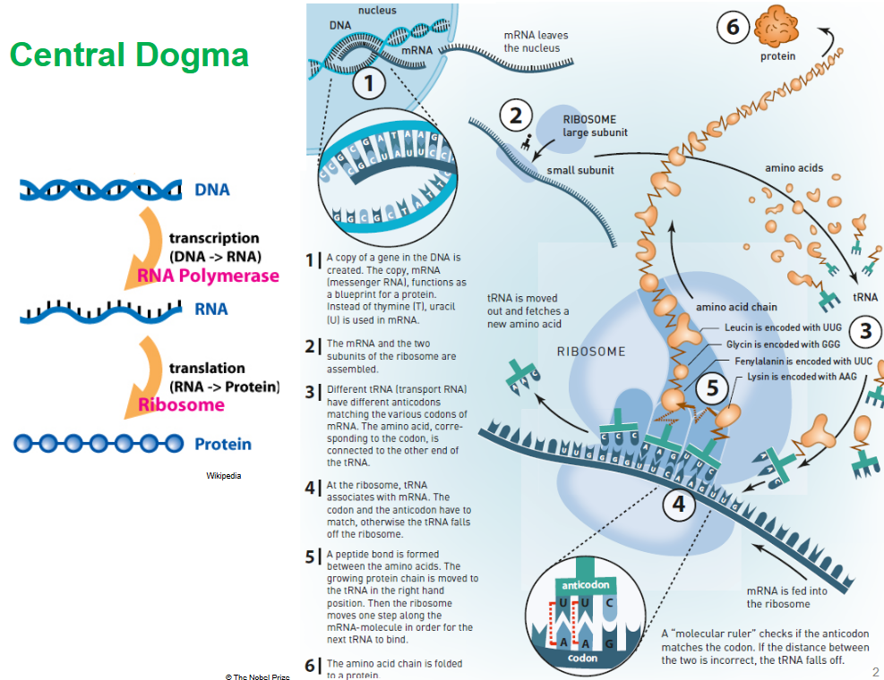
3 Regulating Protein Synthesis
The central dogma of molecular biology is a fundamental principle that describes the flow of genetic information within a biological system, particularly in cells. Proposed by Francis Crick in 1958, the central dogma outlines the sequential processes by which genetic information encoded in DNA is transferred to RNA and eventually translated into proteins. The central dogma can be summarized in three main steps:
DNA Replication: The process by which DNA molecules are duplicated to produce two identical copies of the genetic material. DNA replication occurs during cell division and ensures that each daughter cell receives a complete set of genetic instructions.
Transcription: The process by which genetic information encoded in DNA is transcribed into RNA molecules. During transcription, an enzyme called RNA polymerase binds to a specific region of DNA known as a gene and synthesizes a complementary RNA strand using one of the DNA strands as a template. The resulting RNA molecule, known as messenger RNA (mRNA), carries the genetic information from the DNA to the ribosomes, where it serves as a template for protein synthesis.
Translation: The process by which the genetic information carried by mRNA is translated into proteins. Translation occurs on ribosomes, cellular organelles composed of ribosomal RNA (rRNA) and proteins. During translation, transfer RNA (tRNA) molecules deliver amino acids to the ribosome in response to the sequence of codons (three-nucleotide sequences) on the mRNA. The ribosome reads the mRNA sequence and catalyzes the formation of peptide bonds between the amino acids, resulting in the synthesis of a polypeptide chain, which folds into a functional protein.
3.1 Structure and Synthesis of the Ribosome
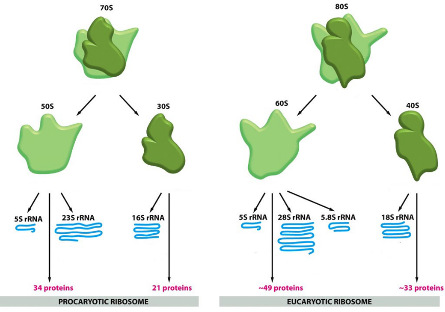
Prokaryotic ribosomes are composed of two subunits: a large 50S subunit and a small 30S subunit, which together form the 70S ribosome. The 70S ribosome is the site of protein synthesis in prokaryotic cells. Prokaryotic ribosomes are smaller than eukaryotic ribosomes, with the 50S subunit having a sedimentation coefficient of 50S and the 30S subunit having a sedimentation coefficient of 30S. They contain ribosomal RNA (rRNA) and protein components, with the 50S subunit containing 23S and 5S rRNA molecules, and the 30S subunit containing 16S rRNA.
Eukaryotic ribosomes are larger and more complex than prokaryotic ribosomes, consisting of a large 60S subunit and a small 40S subunit, which together form the 80S ribosome. The 80S ribosome is the site of protein synthesis in eukaryotic cells. Eukaryotic ribosomes are larger than prokaryotic ribosomes, with the 60S subunit having a sedimentation coefficient of 60S and the 40S subunit having a sedimentation coefficient of 40S. They also contain rRNA and protein components, with the 60S subunit containing 28S, 5.8S, and 5S rRNA molecules, and the 40S subunit containing 18S rRNA.
3.1.1 Ribosome Synthesis
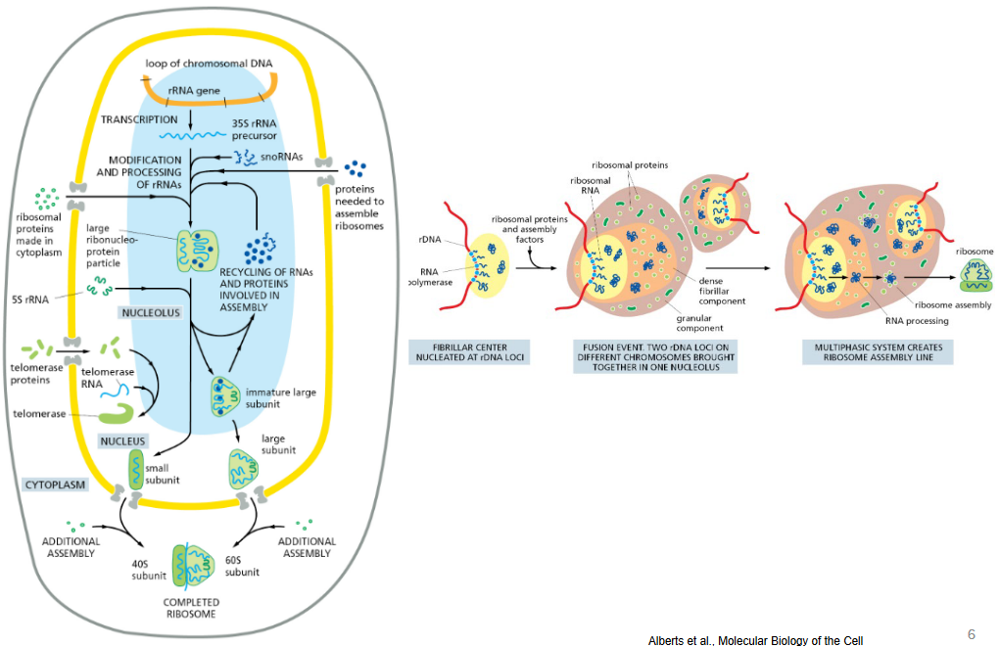
Ribosome synthesis primarily occurs within the nucleolus, a distinct subcompartment of the cell nucleus responsible for ribosome biogenesis. The nucleolus is the site where ribosomal RNA (rRNA) transcription, processing, and assembly with ribosomal proteins take place, leading to the formation of functional ribosomes. Here’s an overview of ribosome synthesis in the nucleolus:
rRNA Transcription: The process of ribosome synthesis begins with the transcription of rRNA genes by RNA polymerase I (Pol I) within the nucleolus. These rRNA genes are organized into tandem repeats known as nucleolar organizer regions (NORs) located on specific chromosomes. The transcription of rRNA genes generates a large precursor molecule called pre-rRNA.
Pre-rRNA Processing: The pre-rRNA transcript undergoes extensive processing to generate mature rRNAs, including the 18S, 5.8S, and 28S rRNAs found in eukaryotic ribosomes. Processing involves the removal of spacer sequences and the cleavage of pre-rRNA intermediates by a complex machinery of small nucleolar ribonucleoproteins (snoRNPs) and endonucleases. This processing occurs in distinct subcompartments of the nucleolus, known as the fibrillar center and the dense fibrillar component.
Assembly of Ribosomal Subunits: Once processed, the mature rRNAs associate with ribosomal proteins to form the small (40S) and large (60S) ribosomal subunits. The assembly of ribosomal subunits occurs in a stepwise manner, involving the coordinated binding of ribosomal proteins to specific regions of the rRNA molecules. The nucleolus provides the necessary environment and factors for efficient assembly, ensuring the proper folding and stability of the ribosomal subunits.
Export of Ribosomal Subunits: After assembly, the mature ribosomal subunits are exported from the nucleolus to the cytoplasm, where they participate in protein synthesis. This export process involves the recognition of specific export signals within the ribosomal subunits by nuclear export receptors and the translocation of ribosomal subunits through nuclear pores. Once in the cytoplasm, the small and large ribosomal subunits associate with messenger RNA (mRNA) and transfer RNA (tRNA) molecules to form functional ribosomes capable of protein synthesis.
3.1.2 RNA Binding Sites
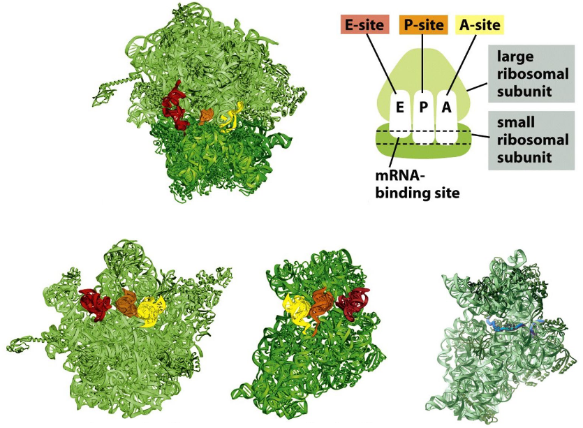
Ribosomes possess three primary binding sites crucial for the translation process: the A (Aminoacyl) site, the P (Peptidyl) site, and the E (Exit) site. These sites facilitate the interaction between mRNA, tRNA, and ribosomal subunits during protein synthesis. In the A site, incoming aminoacyl-tRNA molecules bearing amino acids align with the mRNA codon, ensuring the correct addition of amino acids to the growing polypeptide chain. The P site harbors the peptidyl-tRNA, where the nascent polypeptide chain is elongated by the addition of amino acids. Finally, the E site accommodates the exit of deacylated tRNA molecules following peptide bond formation, enabling the recycling of tRNA for subsequent rounds of translation.
Translation proceeds through four main steps: initiation, elongation, termination, and ribosome recycling. During initiation, the small ribosomal subunit binds to the mRNA molecule at the start codon, guided by initiation factors and the initiator tRNA. Following initiation, the large ribosomal subunit joins the complex, forming the functional ribosome ready for protein synthesis. In the elongation phase, aminoacyl-tRNA molecules enter the A site, and peptide bond formation occurs between the amino acids carried by the tRNAs in the A and P sites. The ribosome moves along the mRNA in a 5’ to 3’ direction, synthesizing the polypeptide chain one amino acid at a time.
Termination occurs when the ribosome encounters a stop codon (UAA, UAG, or UGA) on the mRNA. Release factors bind to the A site, promoting the hydrolysis of the bond between the completed polypeptide chain and the tRNA in the P site. This leads to the release of the polypeptide chain from the ribosome and the dissociation of the ribosomal subunits from the mRNA. Finally, in the ribosome recycling phase, ribosome recycling factors facilitate the disassembly of the ribosome complex, allowing the small and large subunits to be reused for subsequent rounds of translation. This cycle ensures the continuous synthesis of proteins in the cell, crucial for various cellular functions and processes.
3.2 Initiating Translation
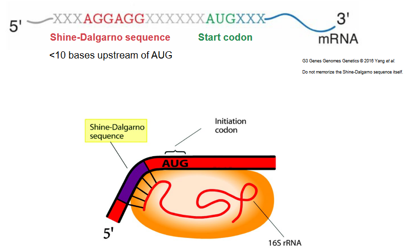
In prokaryotes, the Shine-Dalgarno sequence is a conserved nucleotide sequence found in the mRNA, typically positioned upstream of the start codon (AUG) within the ribosome binding site (RBS). The Shine-Dalgarno sequence facilitates the recognition and binding of the mRNA by the small ribosomal subunit during the initiation of translation.
The Shine-Dalgarno sequence is characterized by the presence of a purine-rich region, often containing the consensus sequence AGGAGG. This sequence is complementary to a region of the 16S ribosomal RNA (rRNA) found in the small ribosomal subunit. The interaction between the Shine-Dalgarno sequence in the mRNA and the complementary sequence in the 16S rRNA helps position the ribosome correctly on the mRNA, ensuring accurate initiation of protein synthesis.
During translation initiation in prokaryotes, the small ribosomal subunit, along with initiation factors, recognizes and binds to the Shine-Dalgarno sequence on the mRNA. This binding facilitates the scanning of the mRNA by the ribosome until it reaches the start codon (usually AUG). Once the start codon is encountered, the large ribosomal subunit joins the complex, and protein synthesis proceeds along the mRNA.
3.2.1 Initiation Factors in Bacteria
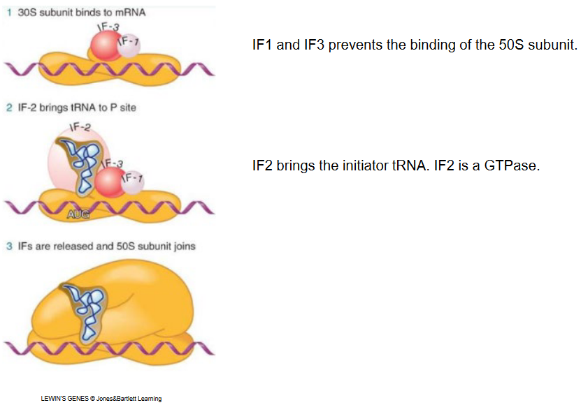
In bacterial translation initiation, several initiation factors play critical roles in orchestrating the assembly of the translation initiation complex and ensuring accurate start codon recognition. Two key initiation factors in bacteria are IF1 and IF3, which prevent premature association of the large 50S ribosomal subunit with the small 30S subunit, thereby promoting the formation of the initiation complex on the mRNA.
IF1: IF1 is an initiation factor that helps prevent the premature binding of the 50S ribosomal subunit to the 30S subunit, ensuring that translation initiation occurs accurately at the start codon. IF1 also stabilizes the 30S subunit and helps maintain its integrity during the initiation process.
IF3: IF3 is another initiation factor that contributes to the fidelity of translation initiation by preventing the association of the 50S subunit with the 30S subunit until the initiation complex is properly assembled on the mRNA. IF3 also helps dissociate ribosomes at the termination of translation.
In addition to IF1 and IF3, IF2 is a critical initiation factor responsible for delivering the initiator tRNA (fMet-tRNAfMet) to the ribosomal complex during translation initiation. IF2 is a GTPase, meaning it hydrolyzes GTP to GDP during its function in the initiation process. The binding of IF2-GTP to the initiator tRNA stabilizes its interaction with the 30S ribosomal subunit and helps position it correctly within the ribosomal P site, ensuring accurate start codon recognition and initiation of protein synthesis.
3.2.2 In Eukaryotes
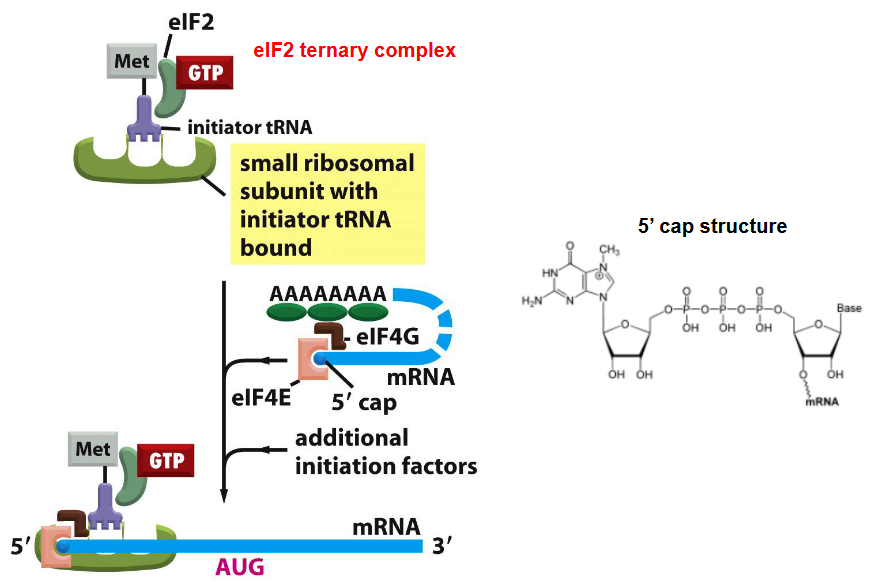
Here’s an overview of the key steps involved in translation initiation in eukaryotic cells:
Recognition of the 5’ Cap Structure: Translation initiation in eukaryotes begins with the recognition of the 5’ cap structure present at the 5’ end of the mRNA molecule. The 5’ cap is recognized by the eukaryotic initiation factor 4E (eIF4E), which forms part of the eIF4F complex along with eIF4A (helicase) and eIF4G (scaffolding protein).
Recruitment of the 40S Ribosomal Subunit: The eIF4F complex, bound to the 5’ cap structure, recruits the 40S small ribosomal subunit. This recruitment is facilitated by the interaction between eIF4G and the poly(A)-binding protein (PABP) bound to the poly(A) tail of the mRNA, forming a closed-loop structure that enhances translation efficiency.
Scanning for the Start Codon: The 40S subunit, together with initiation factors (eIF1, eIF1A, and eIF3), scans along the mRNA in a 5’ to 3’ direction until it encounters the start codon (AUG) within a favorable Kozak sequence context. The Kozak sequence (consensus sequence: GCCRCCAUGG) surrounding the start codon helps ensure accurate start codon recognition.
Initiator tRNA Binding: Upon recognition of the start codon, the initiator tRNA (Met-tRNAiMet) bound to eukaryotic initiation factor 2 (eIF2) and GTP forms a ternary complex. This ternary complex is then recruited to the ribosome, where it base pairs with the start codon in the mRNA.
Assembly of the 80S Initiation Complex: Once the initiator tRNA is properly positioned at the start codon, GTP bound to eIF2 is hydrolyzed to GDP and Pi, resulting in the release of eIF2-GDP from the ribosome. The 60S large ribosomal subunit then joins the 40S subunit to form the 80S initiation complex, with the initiator tRNA occupying the P site of the ribosome.
Initiation Factor Dissociation and Start of Elongation: Following the assembly of the 80S initiation complex, initiation factors eIF1, eIF1A, and eIF3 are released from the ribosome, allowing for the start of elongation. Elongation factors, along with charged tRNAs and GTP, facilitate the stepwise addition of amino acids to the growing polypeptide chain.
3.2.3 5’ UTR in Eukaryotes
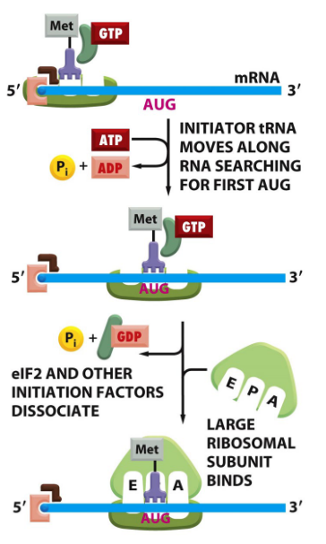
In eukaryotic translation initiation, the 5’ untranslated region (5’ UTR) of mRNA plays a crucial role in directing ribosomes to the correct start codon for protein synthesis. The process of 5’ UTR scanning involves the stepwise movement of ribosomes along the 5’ UTR until they identify and initiate translation at the appropriate start codon. Here’s how 5’ UTR scanning occurs in eukaryotes:
Recognition of the 5’ Cap Structure: Translation initiation begins with the recognition of the 5’ cap structure present at the 5’ end of the mRNA molecule. The 5’ cap consists of a modified guanosine nucleotide (7-methylguanosine) added during mRNA transcription. The cap structure is recognized by eukaryotic initiation factors (eIFs), particularly eIF4E, which is a component of the eIF4F complex.
Recruitment of the 43S Pre-initiation Complex: The eIF4F complex, bound to the 5’ cap structure, recruits the 43S pre-initiation complex, which comprises the 40S small ribosomal subunit, eIF3, eIF1, eIF1A, and the ternary complex consisting of initiator tRNA (Met-tRNAiMet) and eIF2-GTP (eukaryotic initiation factor 2 bound to guanosine triphosphate).
Scanning of the 5’ UTR: The 43S pre-initiation complex, guided by eIF4F, scans along the 5’ UTR of the mRNA in a 5’ to 3’ direction. The scanning process is facilitated by the interaction between eIF4G, a component of the eIF4F complex, and the poly(A)-binding protein (PABP) bound to the poly(A) tail of the mRNA. This interaction helps maintain the circular structure of the mRNA, allowing the ribosome to scan efficiently.
Recognition of the Start Codon: As the 43S pre-initiation complex scans along the 5’ UTR, it encounters the start codon (AUG) embedded within the Kozak consensus sequence. The Kozak sequence (GCC(A/G)CCAUGG) surrounding the start codon helps facilitate accurate start codon recognition by the ribosome.
Formation of the 48S Initiation Complex: Upon recognition of the start codon, base pairing occurs between the initiator tRNA (Met-tRNAiMet) and the start codon. GTP bound to eIF2 is hydrolyzed to GDP and Pi, leading to the release of eIF2-GDP and other initiation factors. The 60S large ribosomal subunit then joins the 40S subunit to form the 80S initiation complex, ready for translation elongation.
3.2.4 Prokaryotic and Eukaryotic mRNA
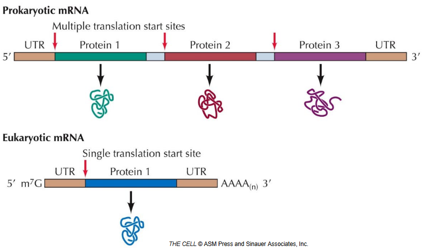
Prokaryotic and eukaryotic mRNA serve as intermediaries between DNA and protein synthesis, yet they exhibit notable differences in structure, processing, and regulation. Prokaryotic mRNA tends to have a simpler structure, lacking extensive post-transcriptional modifications commonly found in eukaryotic mRNA. In prokaryotes, mRNA molecules are often polycistronic, capable of encoding multiple proteins within a single transcript. Conversely, eukaryotic mRNA is typically monocistronic, encoding only one protein per transcript, adding to the complexity of gene expression regulation.
Eukaryotic mRNA undergoes comprehensive post-transcriptional processing, including 5’ capping, splicing, and polyadenylation, which stabilize the molecule and optimize translation initiation. This processing ensures the production of mature mRNA molecules ready for efficient translation. In contrast, prokaryotic mRNA generally lacks such extensive post-transcriptional modifications, being synthesized as mature transcripts directly by RNA polymerase.
Regulatory mechanisms governing mRNA expression differ significantly between prokaryotes and eukaryotes. In eukaryotic cells, gene expression is tightly regulated at various levels, including chromatin remodeling, transcription initiation, mRNA processing, nuclear export, and mRNA stability. Prokaryotic gene expression, on the other hand, primarily occurs at the transcriptional level, although regulatory RNA elements and proteins can also modulate mRNA stability and translation efficiency.
Prokaryotic mRNA features a Shine-Dalgarno sequence upstream of the start codon, facilitating ribosome binding and translation initiation. In contrast, eukaryotic mRNA lacks a Shine-Dalgarno sequence and relies on the recognition of the 5’ cap structure by initiation factors to initiate translation. The ribosome then scans along the 5’ untranslated region until it encounters the start codon.
3.3 Regulating Translation Initiation
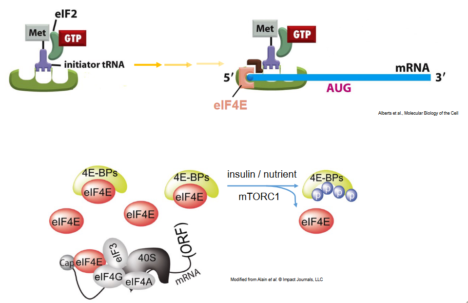
The phosphorylation of eIF4E-binding proteins (4E-BPs) by the mechanistic target of rapamycin complex 1 (mTORC1) is a critical regulatory event in the control of protein synthesis in eukaryotic cells. 4E-BPs are a family of proteins that bind to eIF4E, preventing its interaction with the mRNA 5’ cap structure and thereby inhibiting translation initiation. Here’s an overview of how mTORC1 regulates protein synthesis through the phosphorylation of 4E-BPs:
mTORC1 Activation: The mechanistic target of rapamycin complex 1 (mTORC1) is a key regulator of cell growth and metabolism that integrates various signals, including growth factors, nutrients, energy status, and stress, to control protein synthesis and cell proliferation. When activated, mTORC1 phosphorylates downstream targets involved in protein synthesis, including 4E-BPs.
Phosphorylation of 4E-BPs: In response to favorable growth conditions and signaling cues, mTORC1 phosphorylates 4E-BPs at multiple serine and threonine residues. Phosphorylation of 4E-BPs induces a conformational change that reduces their affinity for eIF4E, allowing eIF4E to interact with eIF4G and other initiation factors to form the eIF4F complex. The eIF4F complex then associates with the mRNA 5’ cap structure, promoting translation initiation.
Release of eIF4E: Upon phosphorylation by mTORC1, 4E-BPs dissociate from eIF4E, freeing eIF4E to participate in the assembly of the translation initiation complex. By releasing eIF4E from its inhibitory interaction with 4E-BPs, mTORC1 activation promotes the recruitment of ribosomes to mRNA transcripts and enhances protein synthesis rates.
Regulation of Gene Expression: The phosphorylation of 4E-BPs by mTORC1 represents a key regulatory mechanism that controls the translation of specific mRNAs involved in cell growth, proliferation, and metabolism. By modulating the activity of 4E-BPs, mTORC1 fine-tunes the translational output of cells in response to extracellular signals and nutrient availability, ensuring efficient protein synthesis under conditions favorable for cell growth and survival.
3.3.1 eIF2 Cycle
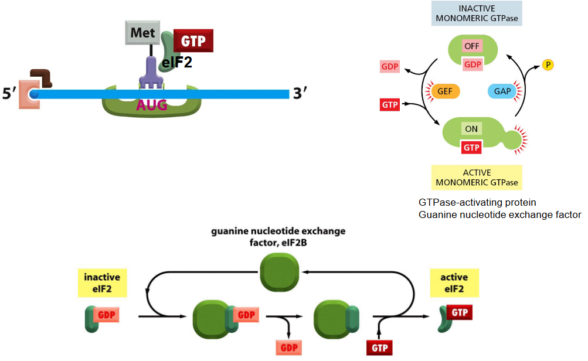
The eukaryotic translation initiation factor 2 (eIF2) cycle is a fundamental process in protein synthesis regulation, controlling the initiation of translation in response to various cellular stresses and environmental cues. Here’s an overview of the eIF2 cycle:
GTP-bound eIF2 Complex Formation: In its inactive state, eIF2 is bound to guanosine triphosphate (GTP) and forms a complex with initiator tRNA (Met-tRNAiMet), termed the ternary complex (eIF2-GTP-Met-tRNAiMet). This ternary complex plays a crucial role in delivering the initiator tRNA to the ribosome during translation initiation.
Recognition of Start Codon: The eIF2-GTP-Met-tRNAiMet complex associates with the small ribosomal subunit (40S) and scans the mRNA transcript for the start codon (AUG). Once the start codon is recognized, the ternary complex positions the initiator tRNA at the ribosomal P site, ready to initiate translation.
GTP Hydrolysis: Upon accurate recognition of the start codon, GTP bound to eIF2 is hydrolyzed to guanosine diphosphate (GDP) and inorganic phosphate (Pi) by the GTPase activity of eIF2. This hydrolysis reaction is facilitated by eIF5, a GTPase-activating protein (GAP) that stimulates the intrinsic GTPase activity of eIF2.
Release of eIF2-GDP: Following GTP hydrolysis, eIF2-GDP is released from the ribosome and recycled back to its active form through the exchange of GDP for GTP. This exchange is catalyzed by eIF2B, a guanine nucleotide exchange factor (GEF) that promotes the reactivation of eIF2 by loading GTP onto eIF2, allowing it to participate in subsequent rounds of translation initiation.
Regulation by Phosphorylation: The activity of eIF2 is tightly regulated by phosphorylation of its α-subunit at a conserved serine residue (Ser51) by specific kinases in response to various stress signals. Phosphorylation of eIF2α inhibits the guanine nucleotide exchange activity of eIF2B, leading to a decrease in the formation of active eIF2-GTP complexes and a consequent reduction in global protein synthesis rates. This integrated stress response (ISR) helps cells adapt to adverse conditions by conserving energy and resources.
3.3.1.1 Inactivating eIF2
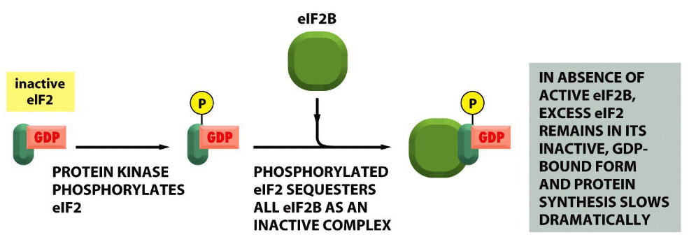
The inactivation of eukaryotic translation initiation factor 2B (eIF2B) by phosphorylated eIF2 is a key regulatory mechanism in the integrated stress response (ISR) pathway. eIF2B is a guanine nucleotide exchange factor (GEF) responsible for catalyzing the exchange of guanosine diphosphate (GDP) for guanosine triphosphate (GTP) on eukaryotic translation initiation factor 2 (eIF2), thereby promoting the formation of the active eIF2-GTP ternary complex essential for translation initiation. Here’s how the inactivation process occurs:
Phosphorylation of eIF2: In response to various stress stimuli such as amino acid deprivation, viral infection, endoplasmic reticulum (ER) stress, or oxidative stress, specific kinases phosphorylate the alpha subunit of eIF2 (eIF2α) at a conserved serine residue (Ser51). These kinases include protein kinase R (PKR), heme-regulated inhibitor kinase (HRI), PKR-like endoplasmic reticulum kinase (PERK), and general control non-derepressible 2 (GCN2). Phosphorylation of eIF2α at Ser51 inhibits the GDP-GTP exchange activity of eIF2B, leading to the sequestration of eIF2 in its inactive GDP-bound form.
Attenuation of Guanine Nucleotide Exchange Activity: Phosphorylated eIF2 (eIF2α-P) binds tightly to eIF2B, resulting in the sequestration and inhibition of eIF2B’s guanine nucleotide exchange activity. As a consequence, the recycling of eIF2-GDP to its active GTP-bound form is impaired, leading to a reduction in the levels of the active eIF2-GTP ternary complex available for translation initiation.
Global Attenuation of Protein Synthesis: The inhibition of eIF2B by phosphorylated eIF2 results in a general attenuation of protein synthesis rates in the cell. Translation initiation is hindered due to the reduced availability of the active eIF2-GTP ternary complex, which is essential for the formation of the pre-initiation complex and the recruitment of ribosomes to mRNA transcripts.
Induction of Stress-Responsive Gene Expression: The reduction in global protein synthesis rates during the ISR is coupled with the selective translation of specific stress-responsive mRNAs encoding proteins involved in adaptive cellular processes. This selective translational control allows cells to conserve energy and resources while prioritizing the synthesis of proteins required for stress adaptation and survival.
3.3.2 Integrated Stress Response
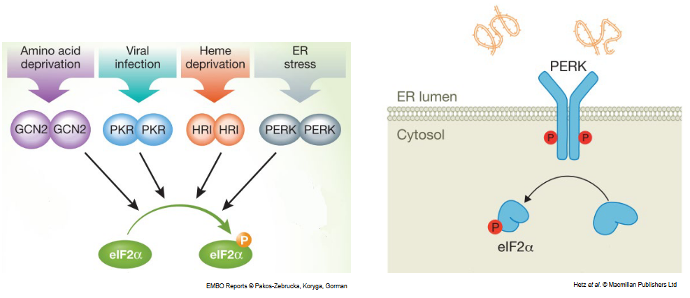
The integrated stress response (ISR) is a conserved cellular signaling pathway that coordinates adaptive responses to various environmental stresses and perturbations. It serves as a crucial mechanism for maintaining cellular homeostasis and promoting cell survival under adverse conditions. Here’s an overview of the integrated stress response:
Initiation of the Integrated Stress Response: The ISR is initiated by the phosphorylation of the alpha subunit of eukaryotic translation initiation factor 2 (eIF2α) at a conserved serine residue (Ser51) in response to diverse stress stimuli. Several stress-responsive protein kinases, including protein kinase R (PKR), heme-regulated inhibitor kinase (HRI), PKR-like endoplasmic reticulum kinase (PERK), and general control non-derepressible 2 (GCN2), phosphorylate eIF2α in a context-specific manner.
Global Attenuation of Protein Synthesis: Phosphorylation of eIF2α inhibits the guanine nucleotide exchange activity of eIF2B, leading to a reduction in the formation of the active eIF2-GTP ternary complex required for translation initiation. As a result, global protein synthesis rates are attenuated, conserving cellular resources and energy during stress conditions.
Selective Translation of Stress-Responsive mRNAs: Despite the general inhibition of protein synthesis, the ISR promotes the selective translation of a subset of mRNAs encoding stress-responsive proteins involved in adaptive cellular processes. These mRNAs often contain upstream open reading frames (uORFs) or specific regulatory elements in their untranslated regions (UTRs) that confer sensitivity to eIF2α phosphorylation and enable preferential translation under stress conditions.
Induction of Stress-Responsive Genes: Activation of the ISR leads to the transcriptional upregulation of stress-responsive genes through the activation of transcription factors such as ATF4 (activating transcription factor 4). ATF4 induces the expression of genes involved in amino acid metabolism, redox regulation, autophagy, and apoptosis, facilitating cellular adaptation and survival in response to stress.
Integration with Other Signaling Pathways: The ISR is integrated with other stress signaling pathways, including the unfolded protein response (UPR), oxidative stress response, and DNA damage response, to coordinate cellular stress responses and maintain homeostasis. Crosstalk between these pathways allows cells to mount appropriate adaptive responses tailored to specific stressors and environmental cues.
3.4 Elongating Translation
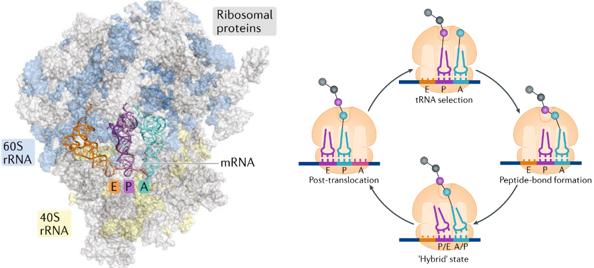
Eukaryotic translation elongation is the stage of protein synthesis where amino acids are added to the growing polypeptide chain according to the sequence encoded by the mRNA. It involves the movement of ribosomes along the mRNA template, decoding successive codons, and facilitating the transfer of amino acids from charged tRNAs to the growing peptide chain. Here’s an overview of eukaryotic translation elongation:
Ribosome Movement: Once the ribosome is assembled on the mRNA and the initiator tRNA is positioned at the start codon (AUG), elongation begins with the binding of the second aminoacyl-tRNA to the A site of the ribosome. The ribosome then translocates along the mRNA in a 5’ to 3’ direction, shifting the peptidyl-tRNA from the A site to the P site and making space for the next incoming aminoacyl-tRNA.
Codon Recognition and Peptide Bond Formation: During each cycle of elongation, the ribosome decodes the mRNA by recognizing the next codon in the A site. Aminoacyl-tRNAs carrying the corresponding amino acids bind to the A site through complementary base pairing between the anticodon of the tRNA and the mRNA codon. Peptide bond formation then occurs between the amino acid carried by the peptidyl-tRNA in the P site and the amino acid carried by the aminoacyl-tRNA in the A site, catalyzed by peptidyl transferase activity in the ribosome.
Translocation: After peptide bond formation (which is formed via a nucleophilic attack by the N-terminus of an amino acid to the center carbon), the ribosome undergoes a translocation step, facilitated by elongation factor EF-G (eEF2 in eukaryotes) and GTP hydrolysis. This translocation process moves the ribosome along the mRNA by one codon, shifting the peptidyl-tRNA from the A site to the P site and the deacylated tRNA from the P site to the E (exit) site. The mRNA and the newly formed peptidyl-tRNA now occupy the A site, ready for the next cycle of elongation.
Elongation Factors: Elongation factors play critical roles in facilitating the elongation process. In addition to EF-G, eukaryotic elongation factors include eEF1A, which delivers aminoacyl-tRNAs to the ribosome, and eEF1B, which promotes the binding of aminoacyl-tRNAs to eEF1A. These factors help ensure the accurate and efficient addition of amino acids to the growing polypeptide chain.
Termination: Elongation continues until a stop codon (UAA, UAG, or UGA) is encountered in the A site of the ribosome. Termination factors, such as eRF1 and eRF3 in eukaryotes, recognize the stop codon and promote the release of the completed polypeptide chain from the ribosome. The ribosome dissociates into its subunits, and the newly synthesized protein is released into the cytoplasm for further processing or folding.
3.4.1 tRNA Charging

tRNA charging, also known as tRNA aminoacylation, is a crucial step in protein synthesis where specific amino acids are covalently attached to their corresponding transfer RNA (tRNA) molecules by aminoacyl-tRNA synthetases (aaRSs). This process ensures that the correct amino acid is delivered to the ribosome during translation. Here’s an overview of tRNA charging by aminoacyl-tRNA synthetases:
Recognition of Amino Acids: Each aminoacyl-tRNA synthetase is specific to a particular amino acid. Before aminoacylation, the amino acid to be attached to the tRNA is first recognized and selected by the corresponding aminoacyl-tRNA synthetase. This recognition process involves the binding of the amino acid to a specific binding pocket within the active site of the synthetase enzyme.
Aminoacylation Reaction: Once the correct amino acid is bound to the synthetase enzyme, the aminoacylation reaction occurs. The enzyme catalyzes the transfer of the amino acid to the 3’ end of the appropriate tRNA molecule, forming an aminoacyl-tRNA complex. This reaction is driven by the hydrolysis of ATP, which provides the energy required for the formation of the high-energy aminoacyl-AMP intermediate.
Specificity Determinants: Aminoacyl-tRNA synthetases possess mechanisms to ensure the fidelity and accuracy of tRNA charging. These enzymes contain specific recognition sites that interact with both the amino acid and the tRNA molecule, allowing them to distinguish between correct and incorrect substrates. The accuracy of tRNA charging is critical for maintaining the fidelity of protein synthesis and preventing errors in translation.
Proofreading and Editing: Despite the high specificity of aminoacyl-tRNA synthetases, errors in tRNA charging can still occur. To minimize errors, some synthetases have proofreading or editing mechanisms that hydrolyze incorrectly charged aminoacyl-tRNA complexes. These editing activities help to correct mischarged tRNAs and maintain the integrity of the translation process.
Role in Protein Synthesis: Once aminoacylated, the charged tRNA molecules serve as adapters between the mRNA codons and the corresponding amino acids during translation elongation. Each tRNA molecule carries a specific amino acid attached to its 3’ end and contains an anticodon sequence that base-pairs with the complementary mRNA codon. This ensures that the correct amino acid is incorporated into the growing polypeptide chain according to the genetic code.
3.4.1.1 eEF1A
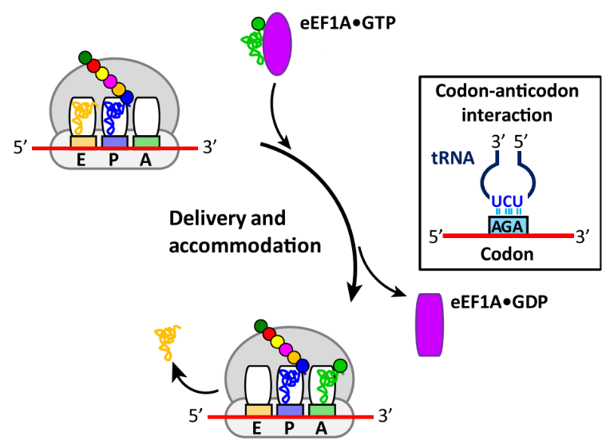
Eukaryotic elongation factor 1A (eEF1A) plays a crucial role in protein synthesis by delivering aminoacyl-tRNA (aa-tRNA) molecules to the ribosome during the elongation phase of translation. Here’s how eEF1A facilitates the delivery of aminoacyl-tRNAs:
Binding to Aminoacyl-tRNA (aa-tRNA): eEF1A binds to aminoacyl-tRNA molecules in a GTP-dependent manner. Each eEF1A molecule forms a complex with a single aa-tRNA, where the amino acid is attached to the 3’ end of the tRNA molecule. This binding occurs at the ribosomal A (aminoacyl) site during the elongation phase of translation.
GTP Hydrolysis: The binding of eEF1A to aa-tRNA is accompanied by the hydrolysis of GTP bound to eEF1A. GTP hydrolysis triggers a conformational change in eEF1A, promoting the release of GDP and inorganic phosphate (Pi) from the protein. This conformational change is essential for the efficient delivery of aa-tRNA to the ribosome.
Delivery to the Ribosome: Once eEF1A is bound to aa-tRNA and GTP is hydrolyzed, the eEF1A-aa-tRNA complex undergoes a structural rearrangement that allows it to interact with the ribosome. eEF1A delivers the aa-tRNA to the ribosomal A site, where the anticodon of the tRNA base-pairs with the complementary mRNA codon.
Translocation and Peptide Bond Formation: After the aa-tRNA is delivered to the ribosome, the ribosome catalyzes the formation of a peptide bond between the amino acid carried by the aa-tRNA in the A site and the growing polypeptide chain attached to the peptidyl-tRNA in the P (peptidyl) site. This process is facilitated by elongation factors and ribosomal RNA (rRNA) within the ribosomal complex.
GDP Dissociation and Recycling: Following peptide bond formation, eEF1A dissociates from the ribosome, releasing GDP from its active site. The released GDP is then exchanged for GTP by guanine nucleotide exchange factors (GEFs), such as eEF1B, regenerating the active form of eEF1A and allowing it to participate in subsequent rounds of aa-tRNA delivery.
3.4.2 Elongation by eEF2
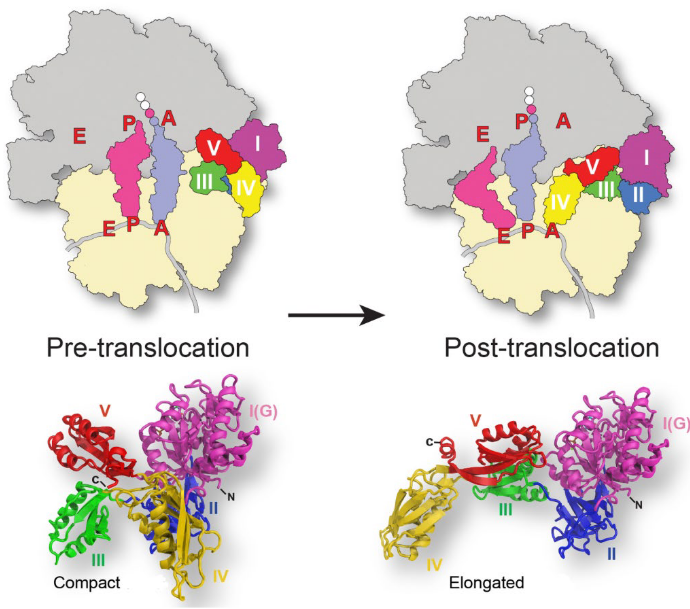
Eukaryotic elongation factor 2 (eEF2) is a GTPase protein that facilitates translocation by promoting the movement of the ribosome along the mRNA template. Here’s how eEF2 mediates translocation:
Ribosome Movement: After the formation of the peptide bond between the amino acid attached to the tRNA in the A site and the growing polypeptide chain on the tRNA in the P site, the ribosome needs to shift to the next codon on the mRNA template to continue elongation.
GTP Binding and Hydrolysis: eEF2 binds to the ribosome in a GTP-bound form. GTP hydrolysis by eEF2 is coupled with the translocation process. The hydrolysis of GTP into GDP and inorganic phosphate (Pi) provides the energy necessary for ribosome movement along the mRNA.
Ribosome Translocation: Upon GTP hydrolysis, eEF2 undergoes a conformational change, which results in the movement of the ribosome along the mRNA in a 5’ to 3’ direction. This translocation step shifts the peptidyl-tRNA from the A site to the P site, and the deacylated tRNA from the P site to the E (exit) site of the ribosome.
GDP Release and Recycling: After translocation, eEF2-GDP is released from the ribosome, and GDP is exchanged for GTP by guanine nucleotide exchange factors (GEFs), such as eEF2B. The recycling of eEF2 to its active GTP-bound form allows it to participate in subsequent rounds of translocation during translation elongation.
Accuracy and Efficiency: The translocation process facilitated by eEF2 is essential for the accurate and efficient synthesis of proteins. It ensures that the ribosome moves along the mRNA in a stepwise manner, decoding each codon and adding the corresponding amino acid to the growing polypeptide chain.
3.4.3 Profiling
3.4.3.1 Polysomes
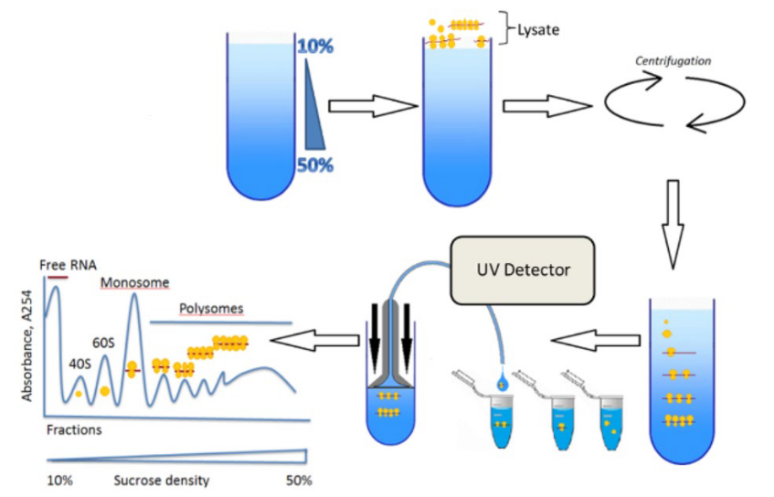
Polysome profiling is a technique used to analyze the translational activity of mRNA molecules within cells. It involves subjecting cell lysates to centrifugation in a sucrose density gradient, which separates ribosomes and associated mRNA molecules based on their sedimentation rates. Polysomes, which consist of multiple ribosomes translating a single mRNA molecule, sediment at higher sucrose densities, while free ribosomes and untranslated mRNA sediment at lower densities.
By analyzing the distribution of ribosomes and mRNA along the gradient, polysome profiling provides valuable information about the efficiency of translation and the regulation of gene expression at the level of mRNA translation. This technique is widely used in molecular biology and cell biology research to study translational control mechanisms, cellular responses to stress, and changes in gene expression under different physiological conditions.
3.4.3.2 Ribosome Profiling
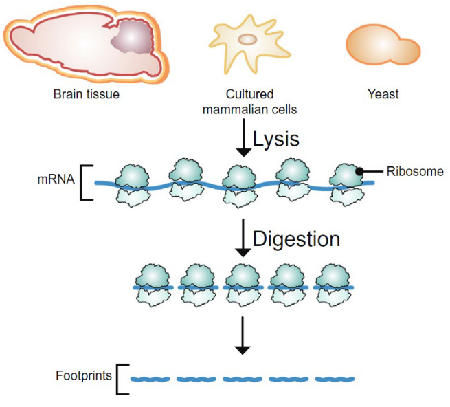
Ribosome profiling, also known as ribosome footprinting or ribo-seq, is a powerful technique used to study the global landscape of translation at a genome-wide level. It involves the deep sequencing of ribosome-protected mRNA fragments (ribosome footprints) to identify the positions of ribosomes along mRNA molecules. The technique begins by treating cells with a translation inhibitor to arrest ribosomes at specific positions on mRNA transcripts. Subsequently, ribosomes are digested away, leaving behind ribosome-protected mRNA fragments. These fragments are then isolated, converted into cDNA libraries, and sequenced using high-throughput sequencing technologies.
Ribosome profiling provides detailed information about the density and position of ribosomes on mRNAs, allowing researchers to determine which mRNAs are actively translated, the efficiency of translation, and the locations of translation initiation and termination.
3.5 Terminating Translation
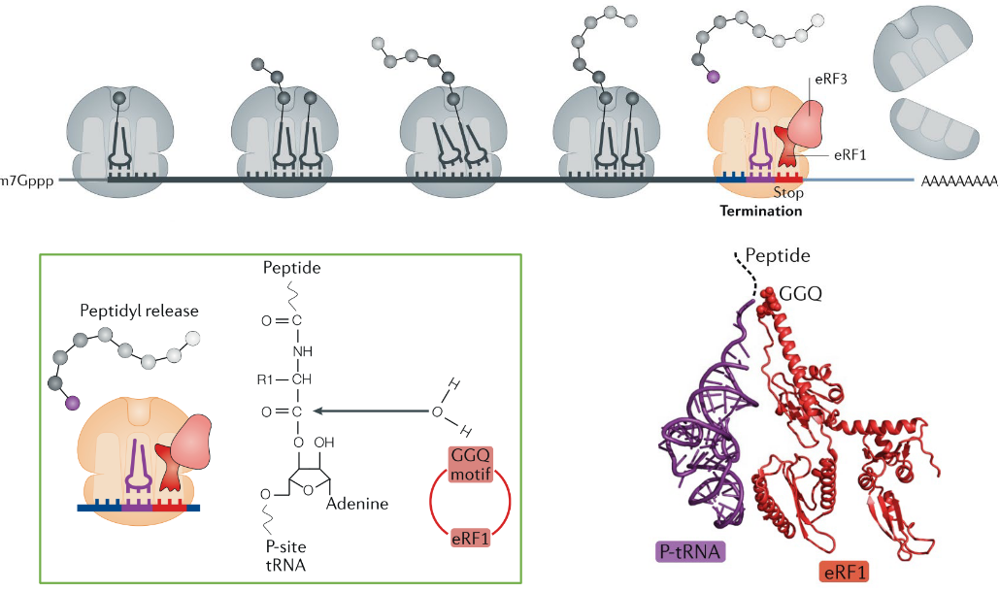
At the termination stage of translation, eukaryotic release factor 1 (eRF1) and eukaryotic release factor 3 (eRF3) play crucial roles in recognizing and facilitating the termination of protein synthesis at stop codons. Here’s how they function at the stop codon:
Recognition of Stop Codon: As the ribosome moves along the mRNA during translation elongation, it encounters stop codons (UAA, UAG, or UGA) that signal the end of protein synthesis. When a stop codon enters the ribosomal A (aminoacyl) site, it does not code for an amino acid but instead signals the termination of translation.
Role of eRF1: eRF1 is responsible for recognizing stop codons and promoting the release of the nascent polypeptide chain from the ribosome. It binds to the stop codon in the A site of the ribosome, mimicking the structure of a tRNA molecule. However, instead of carrying an amino acid, eRF1 triggers the hydrolysis of the ester bond between the nascent polypeptide chain and the tRNA molecule in the P (peptidyl) site, resulting in the release of the polypeptide from the ribosome.
Interaction with eRF3: eRF3 is a GTPase protein that interacts with eRF1 during translation termination. It enhances the efficiency of termination by stimulating the activity of eRF1 and promoting its release of the polypeptide chain. eRF3 also helps to recycle eRF1 by facilitating the dissociation of eRF1 from the ribosome after termination.
GTP Hydrolysis: The interaction between eRF1 and eRF3 is GTP-dependent. eRF3 binds to GTP, and upon interaction with eRF1 at the ribosome, GTP hydrolysis occurs. This hydrolysis event is coupled with the termination process and facilitates the dissociation of eRF1 and eRF3 from the ribosome, allowing the ribosome to be recycled for another round of translation.
3.5.1 Recycling Ribosomes
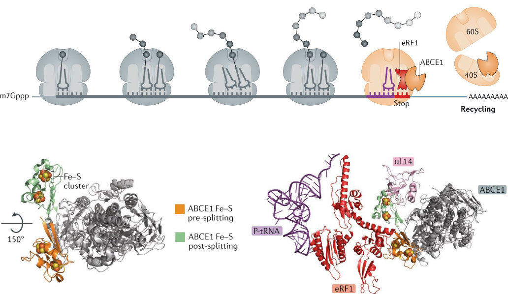
Ribosome recycling is a critical process in protein synthesis that ensures the efficient reuse of ribosomes after the termination of translation. It involves the dissociation of ribosomes from mRNA and the recycling of ribosomal subunits for subsequent rounds of translation. Here’s how ribosome recycling occurs:
Termination of Translation: Ribosome recycling begins after the termination of translation, when a stop codon is encountered on the mRNA template. Release factors, such as eukaryotic release factor 1 (eRF1) and eukaryotic release factor 3 (eRF3), facilitate the release of the synthesized polypeptide chain from the ribosome.
Dissociation of Ribosomes: Once translation is terminated, the ribosome complex consisting of the large and small subunits needs to be disassembled from the mRNA molecule. This dissociation is facilitated by ribosome recycling factors, such as ribosome recycling factor (RRF) and elongation factor G (EF-G) in bacteria, and Rli1/ABCE1 in eukaryotes. These factors promote the separation of the ribosomal subunits and disengage the ribosome from mRNA.
Ribosome Splitting: In bacteria, RRF and EF-G work together to split the ribosome into its large and small subunits. RRF binds to the ribosomal A site, while EF-G hydrolyzes GTP and promotes the splitting of the ribosome complex. In eukaryotes, Rli1/ABCE1 acts as a ribosome-splitting factor by hydrolyzing ATP and disrupting the intersubunit bridges between the large and small ribosomal subunits.
Recycling of Ribosomal Subunits: After the ribosome is split into its subunits, both bacterial and eukaryotic ribosomal subunits are recycled for further rounds of translation. The small ribosomal subunit is particularly important, as it recognizes the mRNA start codon and initiates translation. The recycling process ensures the efficient utilization of ribosomal components and enables the cell to maintain high rates of protein synthesis.